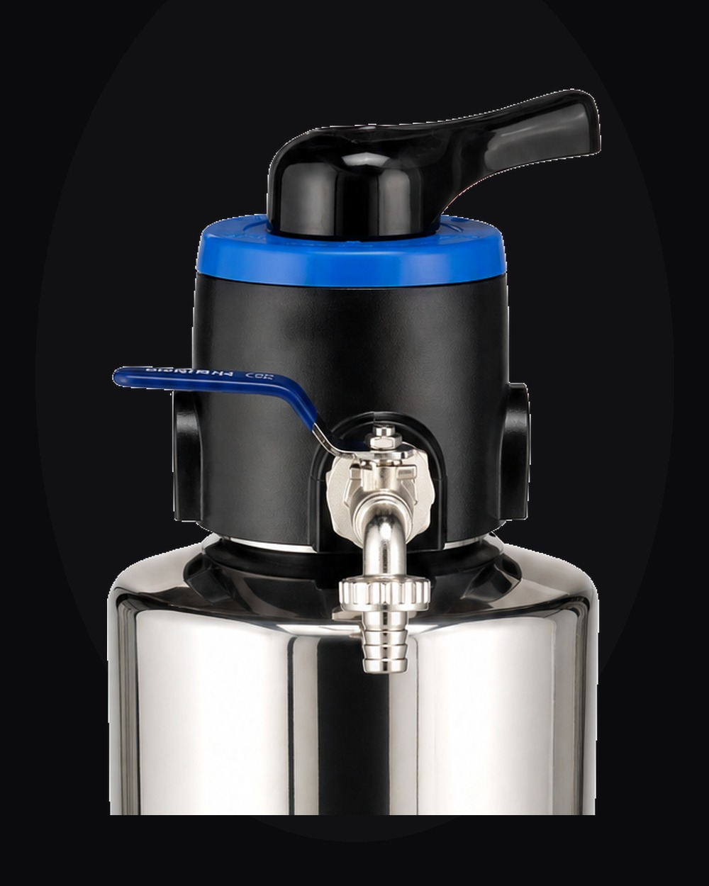
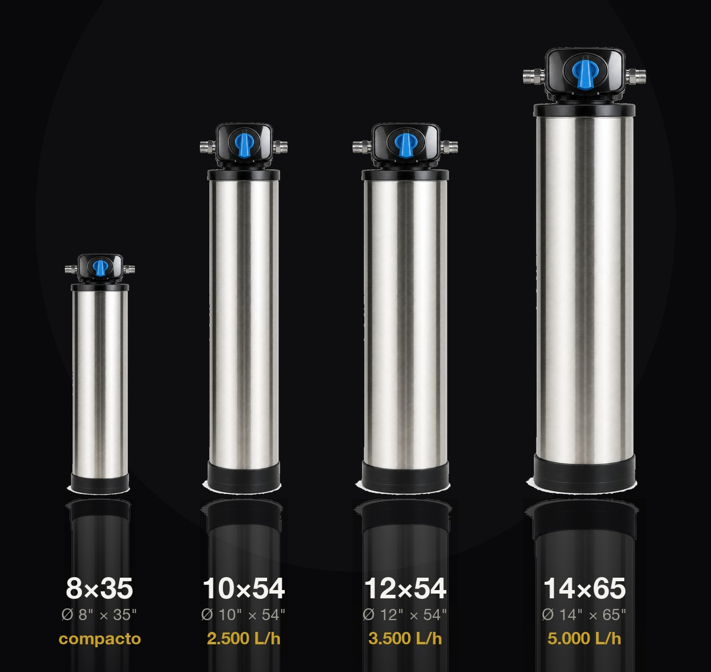

No banho
Água sem sedimentos no chuveiro, na ducha e na banheira.
Filtro de entrada · a casa inteira
Um único filtro no cavalete, junto ao hidrômetro. Toda a água que entra no imóvel passa por ele — antes da caixa d'água e de cada torneira da casa.
A água que chega na sua casa percorreu quilômetros de tubulação. No caminho, ela carrega o que não deveria: barro, areia, silte, lodo e ferrugem. O American Filter trata toda a água logo na entrada e retém esses sedimentos antes que cheguem à sua caixa d'água. Em cada torneira.
Não é purificador de pia. É a casa inteira.
Água sem sedimentos no chuveiro, na ducha e na banheira.

Louça, panelas e o preparo dos alimentos, livres de barro e ferrugem.

A mesma água tratada na pia do banheiro, todos os dias.

A vasilha dele recebe a mesma água filtrada da casa toda.
Onde o American Filter trabalha

Da casa compacta à ampla — água tratada na entrada, em todas as torneiras, sem perda de pressão.

Alto volume e fluxo contínuo. Tratamento na entrada do prédio, protegendo a hidráulica de todos.

Vazão robusta para operações exigentes, com a maior garantia do Brasil.

O que você não vê, sente
Sedimentos como barro e ferrugem deixam a água escura, entopem o crivo do chuveiro e desgastam por dentro máquina de lavar, torneiras e aquecedor. O American Filter resolve na entrada — e cada equipamento da casa dura mais.
Engenharia da água

Quartzo de alta performance forma o leito que retém os sedimentos suspensos.

Mineral natural de estrutura porosa que potencializa a retenção de partículas finas.

Corpo em inox 304 com banho de níquel — resistência à altura de uma década de garantia.
Partículas até 10× mais finas que um fio de cabelo. Na prática: barro, areia, silte, lodo e ferrugem barrados antes de chegarem às suas torneiras.

Válvula Runxin · manual ou automática
No comando do American Filter está uma válvula Runxin — referência mundial em controle de filtros. Na versão manual (linha F56), um único movimento alterna filtragem, retrolavagem e enxágue, com by-pass para isolar o filtro sem cortar a água. Na versão automática, a válvula faz a retrolavagem sozinha, em ciclos programados por tempo — a partir de 2 m³/h. Em qualquer uma, a mídia se renova e a vazão se mantém.
Quatro tamanhos. Uma engenharia.

Ø 10" × 54" · Ø 25,4 × 137,2 cm
até 2.500 litros/hora
Pressão de trabalho: 1 a 3 kgf/cm²
Apartamentos e casas de porte médio, com fluxo constante.

Proporções reais · diâmetro × altura em polegadas · vazão em litros/hora
Ficha técnica
| Modelo | Ø × Altura (pol) | Ø × Altura (cm) | Vazão | Pressão de trabalho | Aplicação |
|---|---|---|---|---|---|
| 8×35 | 8" × 35" | 20,3 × 88,9 cm | 1.000 L/h | 1 a 3 kgf/cm² | Residências e comércios |
| 10×54 | 10" × 54" | 25,4 × 137,2 cm | 2.500 L/h | 1 a 3 kgf/cm² | Apartamentos e casas médias |
| 12×54 | 12" × 54" | 30,5 × 137,2 cm | 3.500 L/h | 1 a 3 kgf/cm² | Casas grandes / alto consumo |
| 14×65 | 14" × 65" | 35,6 × 165,1 cm | 5.000 L/h | 1 a 3 kgf/cm² | Amplas, comércio, indústria, condomínio |
Certificação & garantia
Um filtro trata a água da sua família inteira — e merece a prova de que entrega o que diz. O American Filter tem as duas garantias que importam: a de um órgão independente e a do tempo.
Cada American Filter atende ao mais alto padrão nacional de qualidade e segurança. Não é promessa de marketing — é a aprovação de um órgão independente que testa e atesta o produto. Quando vê o selo Inmetro, você sabe que está levando engenharia comprovada para dentro de casa.
Uma garantia dessas só é possível por causa do material: aço inox 304 com banho de níquel, que resiste à corrosão por décadas. Você instala uma vez e esquece, com uma década inteira coberta. Não é confiança no discurso — é confiança na engenharia. E nenhum concorrente vai tão longe.
anos de garantia
a maior garantia do Brasil
certificação máxima
Simples por fora. Sofisticado por dentro.

Instalado de verdade


Perguntas frequentes
É um filtro instalado no cavalete, junto ao hidrômetro, antes da caixa d'água. Toda a água que entra no imóvel passa por ele — garantindo água filtrada em todas as torneiras da casa.
Sim. Ele retém sedimentos de 5 a 15 mícrons: barro, areia, silte, lodo e ferrugem. Não remove bactérias, vírus ou substâncias dissolvidas, e não substitui purificadores para consumo.
8×35 entrega até 1.000 L/h · 10×54 até 2.500 L/h · 12×54 até 3.500 L/h · 14×65 até 5.000 L/h. Pressão de trabalho de 1 a 3 kgf/cm² em todos os modelos.
Você escolhe. Versão manual Runxin (linha F56), monocomando com by-pass; ou versão automática, com retrolavagem programada por tempo, a partir de 2 m³/h.
Pouca. A retrolavagem limpa a mídia (quartzo e zeólita) e devolve a vazão original. O corpo em aço inox 304 tem 10 anos de garantia.
Programa de revenda American Filter
O American Filter não é mais um filtro no catálogo — é a categoria superior: filtro de entrada premium, em aço inox, certificado pelo Inmetro e com a maior garantia do Brasil. Você leva a marca; nós levamos o suporte.